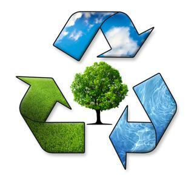
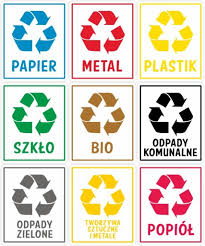
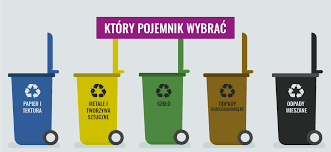
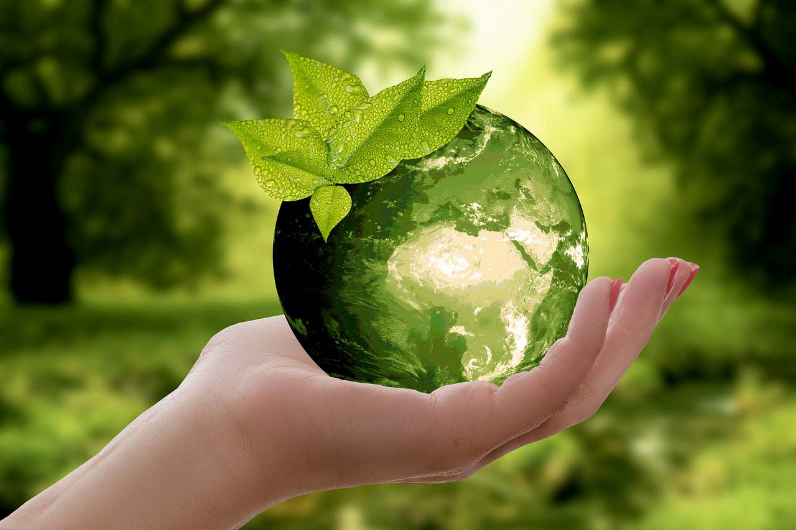
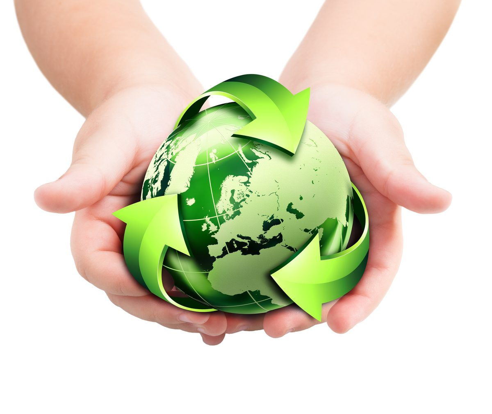
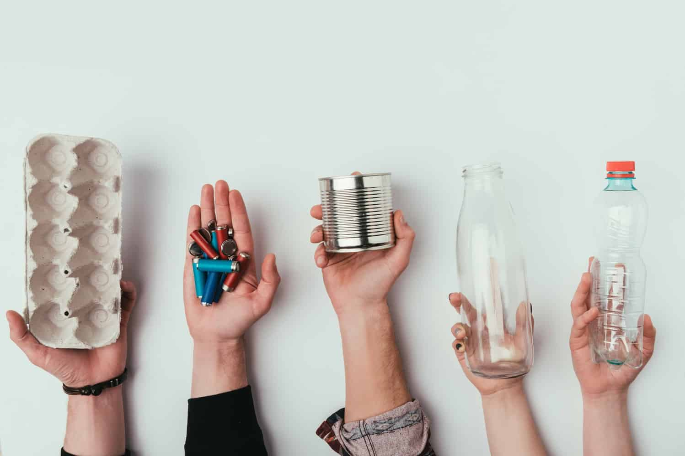

.jpg)
.jpg)
.jpg)
.jpg)
.jpg)





Recykling (recyklizacja, recyrkulacja, ang. recycling) – jedna z metod ochrony środowiska naturalnego. Jej celem jest ograniczenie zużycia surowców naturalnych oraz zmniejszenie ilości odpadów. Recykling obejmuje odzyskiwanie surowców z produktów odpadowych i wykorzystywanie ich do produkcji nowych, poszukiwanych towarów. Materiały, które nadają się do ponownego wykorzystania, bywają opatrzone kodem recyklingu.
Zasadą działania recyklingu jest maksymalizacja ponownego wykorzystania materiałów odpadowych, z uwzględnieniem minimalizacji nakładów na ich przetworzenie, przez co chronione są surowce naturalne, które służą do ich wytworzenia oraz surowce służące do ich późniejszego przetworzenia. Recykling odbywa się w dwóch obszarach: produkowania dóbr oraz późniejszego powstawania z nich odpadów. Założenia recyklingu zakładają wymuszanie odpowiednich postaw producentów dóbr, sprzyjających produkcji materiałów jak najbardziej odzyskiwalnych oraz tworzenie odpowiednich zachowań u odbiorców tych dóbr. Recykling jest systemem organizacji obiegu materiałów, które mogą być wielokrotnie przetwarzane. W skład systemu wchodzą elementy: właściwa polityka ustawodawcza państwa sprzyjająca recyklingowi, rozwój technologii przetwarzania odpadów, przede wszystkim w celu wykorzystania jak największej ich części, projektowanie dóbr z możliwie najszerszym wykorzystaniem w nich materiałów podatnych na recykling, projektowanie dóbr możliwie jednorodnych materiałowo, co upraszcza ich późniejszy demontaż i segregację odpadów. projektowanie dóbr będących połączeniem różnych materiałów w taki sposób, aby ich późniejsze rozdzielenie na elementy zbudowane z jednorodnych materiałów było maksymalnie ułatwione, projektowanie dóbr w taki sposób, aby jak najwięcej ich części składowych nadawało się do powtórnego wykorzystania bez przetwarzania lub przy minimalnych nakładach na doprowadzenie do postaci pełnowartościowej, system oznaczania zarówno opakowań produktów, jak i elementów składowych tych produktów, w celu ułatwienia rozpoznawania i segregacji odpadów. edukacja proekologiczna społeczeństwa oraz promowanie i organizacja zachowań proekologicznych, logistyka sortowania, gromadzenia i odbioru zużytych dóbr oraz ich elementów składowych, przetwarzanie (uprzednio przygotowanych) odpadów i odzyskiwanie z nich surowców.
Szczegółowy sposób segregacji określa rozporządzenie Ministra Środowiska z dnia 29 grudnia 2016 r. w sprawie szczegółowego sposobu selektywnego zbierania wybranych frakcji odpadów (Dz.U. z 2017 r. poz. 19). Główna zasada Jednolitego Systemu Segregacji Odpadów (JSSO) jest jedna – należy oddzielać surowce od odpadów, które nie nadają się do powtórnego przetworzenia. Jakie surowce oddzielamy? Są to: metale i tworzywa sztuczne, papier, a także opakowania szklane i odpady biodegradowalne. Niektóre gminy mogły zdecydować o konieczności rozdzielania szkła białego i kolorowego.
Za recykling uznaje się powtórne wykorzystanie pozyskanych odpadów, które zostają przetworzone, a z uzyskanego w ten sposób materiału stworzony zostaje nowy produkt. Proces recyklingu pozwala na zmniejszenie korzystania ze złóż naturalnych oraz ograniczenie ilości odpadów. Podstawową zasadą recyklingu jest maksymalne wykorzystanie dostępnych odpadów przy jak najmniejszym nakładzie energetycznym i surowcowym. Za logo recyklingu przyjęto trzy strzałki obrazujące przepływ przetwarzanych odpadów.